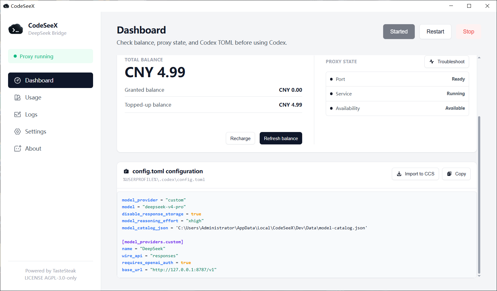
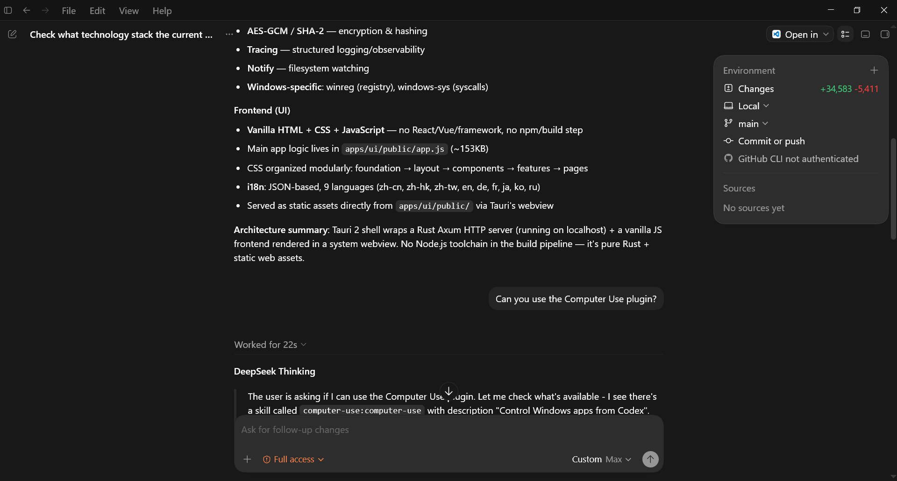

Install the desktop app
On Windows, use the NSIS CodeSeeX_*_setup.exe installer from GitHub Releases for normal install and update.
The generated adapter configuration is machine-specific. Prefer copying it from the desktop manager instead of hand-writing paths or ports.

On Windows, use the NSIS CodeSeeX_*_setup.exe installer from GitHub Releases for normal install and update.
Confirm the manager shows the local service running, usually on 127.0.0.1:8787.
Use the adapter card so model_catalog_json and base_url match the current machine.
Choose deepseek-v4-pro for quality or deepseek-v4-flash for speed.
This is a structure example only. Copy the real TOML from the CodeSeeX desktop manager because model_catalog_json, base_url, and local paths are machine-specific.
model_provider = "custom"
model = "deepseek-v4-pro"
disable_response_storage = true
model_reasoning_effort = "xhigh"
model_catalog_json = "<generated path to model-catalog.json>"
[model_providers.custom]
name = "DeepSeek"
wire_api = "responses"
requires_openai_auth = true
base_url = "http://127.0.0.1:8787/v1"Most setup failures are catalog path, port, proxy, or tool exposure issues.

Use the NSIS installer for desktop install, update, and legacy migration.